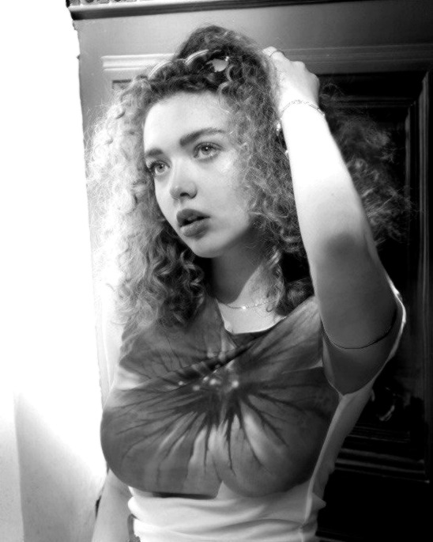
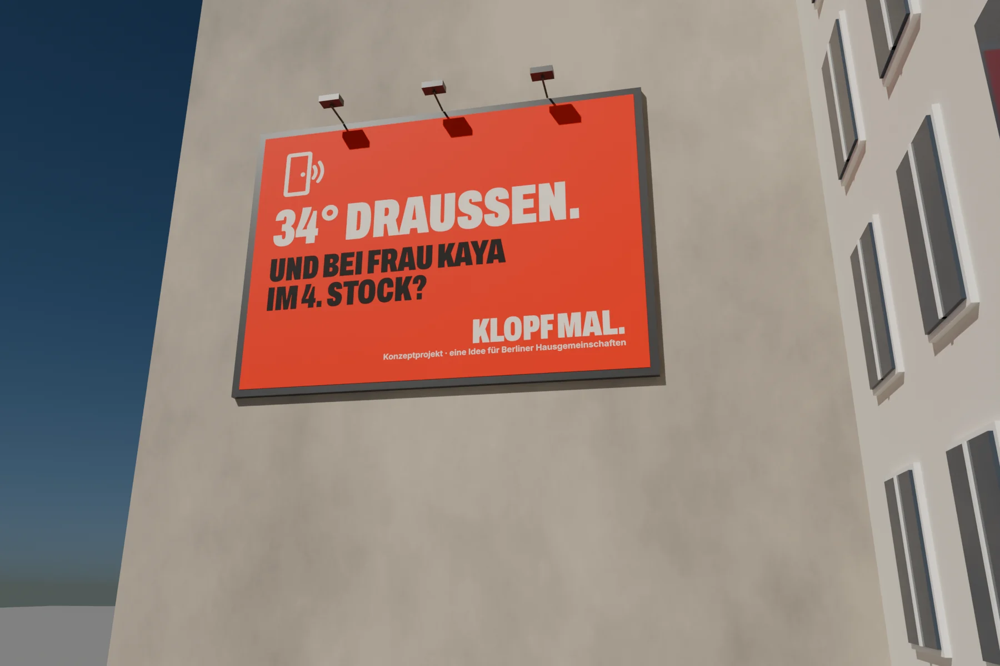

Anna
Khinchuk.
I'm a graphic designer and design student in Berlin. I build identity systems, campaigns and generative graphics, and I care about type, color and systems that hold up on a street, a screen and a door.

Selected work
Self-initiated concept projects with fictional brands. Each case shows the brief, the idea, the system and how it is applied.
 ↗
↗FENSTER Kunsthalle
A flexible identity for a contemporary art space: the logo is a window that changes shape with every exhibition, from posters to wayfinding, tickets and website.
 ↗
↗RAUSCHEN festival
A generative identity for an electronic music festival. Every poster, wristband and stage visual is drawn by code from a seed.

↗Klopf mal. campaign
A heatwave campaign that asks Berliners to knock on an older neighbour's door: billboard, posters, stairwell notice, door hanger and stories.
Other portfolios
The same designer, focused on a different kind of work.
Hey, I'm Anna.
I study UX/UI design in my third semester at the University of Europe for Applied Sciences. Next to interfaces, I love the craft of graphic design: type, grids, color, and making a small brand feel like itself.
Before design school I led a project team and made 3D models and presentation designs during an internship at an IT company. That taught me to think in space, which helps when a design has to work on a wall, a door or a stage.